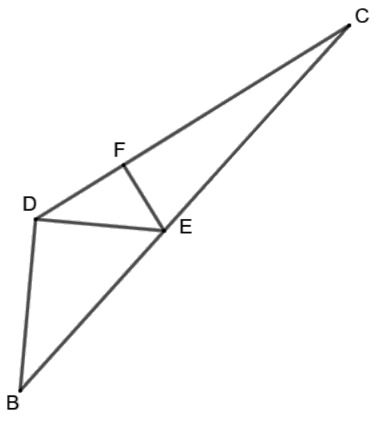
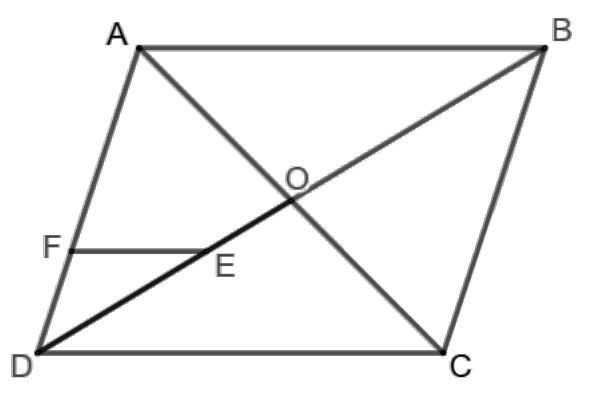
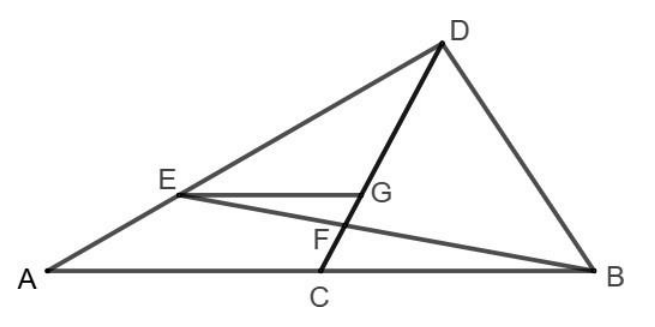
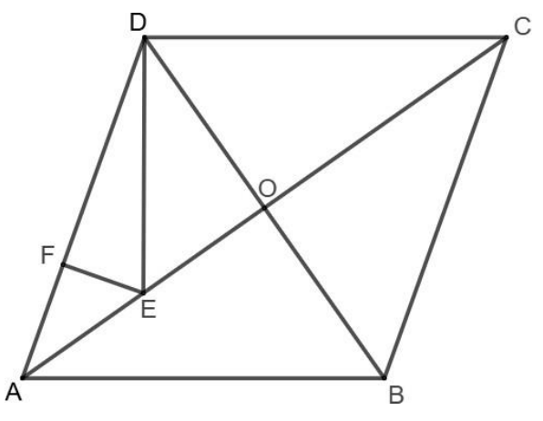
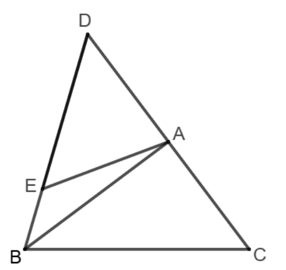
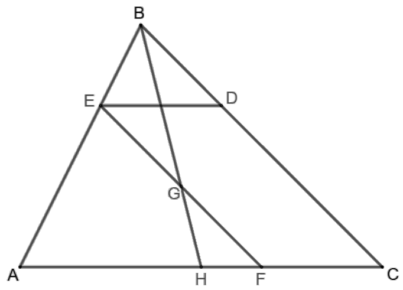
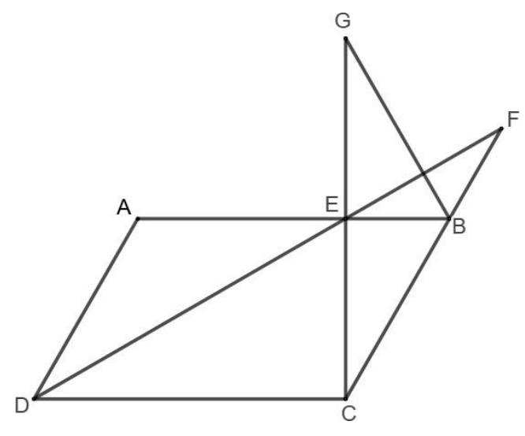
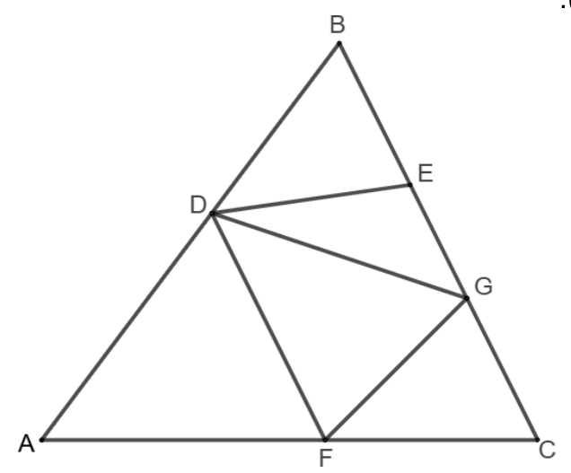
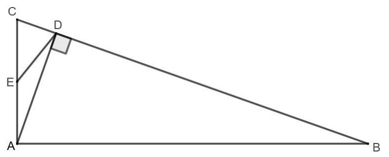
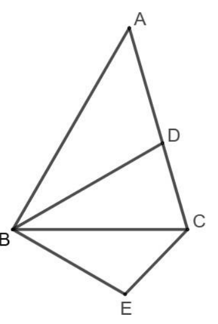

פתרון מלא לכל 10 שאלות הגאומטריה בעבודת הקיץ. בכל סעיף מוסבר איך מגיעים לפתרון, ומתחתיו מופיעים המשפטים והתכונות שבהם השתמשנו. לחיצה על שם של משפט מובילה להסבר שלו בארגז הכלים.
אם שתי זוויות במשולש אחד שוות לשתי זוויות במשולש אחר, המשולשים דומים.
אם שתי צלעות במשולש אחד פרופורציוניות לשתי צלעות במשולש אחר, והזוויות שביניהן שוות, המשולשים דומים.
היחס בין כל שתי צלעות מתאימות שווה ליחס הדמיון \(k\). היחס בין השטחים הוא \(k^{2}\). זוויות מתאימות שוות.
ישר המקביל לצלע במשולש יוצר משולש דומה ומחלק את שתי הצלעות האחרות לקטעים פרופורציוניים. ההפך: אם ישר מחלק שתי צלעות באותו יחס, הוא מקביל לצלע השלישית.
ישר שחותך שני ישרים מקבילים יוצר זוויות מתחלפות שוות וזוויות מתאימות שוות.
סכום הזוויות במשולש הוא 180°. זוויות צמודות משלימות ל־180°. זוויות קודקודיות שוות. שני ישרים המאונכים לאותו ישר מקבילים זה לזה.
במקבילית צלעות נגדיות שוות ומקבילות, זוויות נגדיות שוות, זוויות סמוכות משלימות ל־180°, והאלכסונים חוצים זה את זה. מרובע עם שני זוגות צלעות מקבילות, או עם זוג צלעות נגדיות שוות ומקבילות, הוא מקבילית.
כל הצלעות שוות. האלכסונים מאונכים זה לזה, חוצים זה את זה וחוצים את זוויות המעוין.
זוויות הבסיס שוות, ולהפך: אם שתי זוויות שוות, הצלעות שמולן שוות. התיכון לבסיס הוא גם גובה וגם חוצה זווית הראש.
שלושת התיכונים נפגשים בנקודה אחת, שמחלקת כל תיכון ביחס \(2:1\) מהקדקוד. לכן נקודה על תיכון שמחלקת אותו ביחס \(2:1\) מהקדקוד היא מפגש התיכונים.
חוצה זווית פנימית במשולש מחלק את הצלע שמולו ביחס של שתי הצלעות הכולאות את הזווית.
משפט פיתגורס. התיכון ליתר שווה למחצית היתר. ניצב שווה למחצית היתר אם ורק אם הזווית שמולו היא 30°.
למשולשים בעלי אותו גובה (קדקוד משותף ובסיסים על אותו ישר), יחס השטחים שווה ליחס הבסיסים. תיכון מחלק משולש לשני משולשים שווי שטח.
התוצאות הסופיות, לבדיקה מהירה. הסעיפים שבהם מבקשים להוכיח לא מופיעים כאן.
| שאלה | תשובות |
|---|---|
| 1 | ב. \(\dfrac{CD}{CE} = \dfrac{4}{3}\), \(\dfrac{BD}{DE} = \dfrac{4}{3}\) · ג. \(\dfrac{BD}{BE} = \dfrac{4}{5}\) · ד. יחס דמיון \(5:3\), \(DF:FC = 7:18\) |
| 2 | א. \(\dfrac{DE}{BE} = \dfrac{1}{2}\) · ב. \(\dfrac{DF}{AD} = \dfrac{1}{3}\) · ג. \(\dfrac{AE}{EG} = 2\) · ד. \(S_{ADE} = 3S\), \(S_{ADO} = 4.5S\) |
| 3 | א. \(\dfrac{EG}{AC} = \dfrac{2}{3}\) · ב. \(\dfrac{GF}{FC} = \dfrac{2}{3}\), \(\dfrac{DF}{FC} = 4\) |
| 4 | א. \(\dfrac{AE}{EC} = \dfrac{1}{3}\) · ד. \(S_{AEF} = 2S\), \(S_{CED} = 18S\) |
| 5 | ב. \(\dfrac{DE}{AC} = \dfrac{6}{5}\), \(S_{ADE}:S_{ABE} = 18:7\) · ג. \(BA:AF = 16:9\) |
| 6 | א. \(\dfrac{ED}{AC} = \dfrac{1}{3}\) · ב. \(\dfrac{EF}{BD} = 2\) · ד. \(S_{BCH} = 9S\), \(S_{ABC} = 18S\) |
| 7 | א. \(\measuredangle ABC = 2\alpha\) · ב. \(\measuredangle ECB = 90^{\circ} - 2\alpha\) · ג. \(\alpha = 30^{\circ}\) · ד. \(S_{ABCD} = 12S\) |
| 8 | כל הסעיפים הם הוכחות |
| 9 | ג. \(\dfrac{DC}{AC} = \dfrac{1}{3}\), \(\dfrac{DC}{DB} = \dfrac{1}{8}\) · ד. \(S_{ACD} = 8\), \(S_{ABC} = 72\) |
| 10 | ג. \(\measuredangle ABD = 30^{\circ}\) |
הנקודה \(E\) נמצאת על הצלע \(BC\) במשולש \(BCD\), ו־\(\measuredangle DBE = \measuredangle CDE\).

נשווה את המשולשים \(BCD\) ו־\(DCE\):
• \(\measuredangle C\) משותפת לשני המשולשים.
• \(\measuredangle DBC = \measuredangle CDE\), כי זה הנתון (\(\measuredangle DBE\) היא בדיוק \(\measuredangle DBC\), כי \(E\) נמצאת על \(BC\)).
שתי זוויות שוות, ולכן המשולשים דומים. ההתאמה היא \(B\leftrightarrow D\), \(C\leftrightarrow C\), \(D\leftrightarrow E\), ומכאן:
\(\dfrac{BC}{DC} = \dfrac{CD}{CE} = \dfrac{BD}{DE}\)
שימוש ב: ז.זיחסים במשולשים דומים
השלמה: בקובץ נחתכה האות השנייה במונה. \(\dfrac{BE}{CE}\) היא הקריאה היחידה שמתאימה לשרטוט ונותנת תוצאות שלמות.
נסמן \(BE = 7k\), \(CE = 9k\). לכן \(BC = 16k\).
מהדמיון בסעיף א: \(\dfrac{BC}{CD} = \dfrac{CD}{CE}\), ולכן \(CD^{2} = BC\cdot CE = 16k\cdot 9k = 144k^{2}\), כלומר \(CD = 12k\).
(1) \(\dfrac{CD}{CE} = \dfrac{12k}{9k} = \dfrac{4}{3}\)
(2) \(\dfrac{BD}{DE}\) שווה ליחס הדמיון, כלומר ל־\(\dfrac{BC}{DC} = \dfrac{16k}{12k} = \dfrac{4}{3}\).
\(\dfrac{CD}{CE} = \dfrac{4}{3}\), \(\dfrac{BD}{DE} = \dfrac{4}{3}\)
שימוש ב: יחסים במשולשים דומים
המשולש \(BDE\) ישר זווית ב־\(D\), ומסעיף ב(2) ידוע ש־\(\dfrac{BD}{DE} = \dfrac{4}{3}\).
נסמן \(BD = 4m\), \(DE = 3m\). לפי פיתגורס: \(BE = \sqrt{16m^{2} + 9m^{2}} = 5m\).
\(\dfrac{BD}{BE} = \dfrac{4m}{5m} = \dfrac{4}{5}\)
\(\dfrac{BD}{BE} = \dfrac{4}{5}\)
שימוש ב: פיתגורס
(1) הוכחה: \(\triangle BDE \sim \triangle DFE\).
• \(\measuredangle BDE = \measuredangle DFE = 90^{\circ}\) (נתון ו־\(EF \perp DC\)).
• \(\measuredangle DBE = \measuredangle FDE\), כי \(\measuredangle FDE\) היא \(\measuredangle CDE\), ולפי הנתון היא שווה ל־\(\measuredangle DBE\).
לכן המשולשים דומים לפי ז.ז, בהתאמה \(B\leftrightarrow D\), \(D\leftrightarrow F\), \(E\leftrightarrow E\).
(2) יחס הדמיון. היתר \(BE\) מתאים ליתר \(DE\), ולכן \(k = \dfrac{BE}{DE} = \dfrac{5m}{3m} = \dfrac{5}{3}\).
(3) היחס \(DF:FC\). נבטא הכול באמצעות \(k\) מסעיף ב: \(BE = 7k = 5m\), ולכן \(m = \dfrac{7k}{5}\), \(BD = \dfrac{28k}{5}\), \(DE = \dfrac{21k}{5}\).
הצלע \(DF\) מתאימה ל־\(BD\): \(DF = BD\cdot \dfrac{3}{5} = \dfrac{84k}{25}\).
\(DC = 12k = \dfrac{300k}{25}\), ולכן \(FC = \dfrac{300k}{25} - \dfrac{84k}{25} = \dfrac{216k}{25}\).
\(DF:FC = 84:216 = 7:18\)
יחס הדמיון \(5:3\), \(DF:FC = 7:18\)
שימוש ב: ז.זיחסים במשולשים דומים
\(ABCD\) מקבילית שאלכסוניה נפגשים בנקודה \(O\). הנקודה \(E\) על הקטע \(DO\), ו־\(DE = 2EO\).

נסמן \(EO = t\), ולכן \(DE = 2t\) ו־\(DO = 3t\).
האלכסונים במקבילית חוצים זה את זה, ולכן \(OB = DO = 3t\).
\(BE = EO + OB = t + 3t = 4t\), ולכן \(\dfrac{DE}{BE} = \dfrac{2t}{4t} = \dfrac{1}{2}\).
\(\dfrac{DE}{BE} = \dfrac{1}{2}\)
שימוש ב: אלכסוני מקבילית
במשולש \(DAB\) הקטע \(EF\) מקביל לצלע \(AB\). לפי תאלס המורחב, \(\triangle DFE \sim \triangle DAB\) ו־\(\dfrac{DF}{DA} = \dfrac{DE}{DB}\).
\(DB = 2\cdot DO = 6t\), ולכן \(\dfrac{DF}{DA} = \dfrac{2t}{6t} = \dfrac{1}{3}\).
\(\dfrac{DF}{AD} = \dfrac{1}{3}\)
שימוש ב: תאלס המורחב
(1) \(\dfrac{AE}{EG}\). נשווה את \(\triangle ABE\) ו־\(\triangle GDE\):
• \(\measuredangle AEB = \measuredangle GED\) (זוויות קודקודיות).
• \(\measuredangle ABE = \measuredangle GDE\) (זוויות מתחלפות, כי \(AB \parallel DC\)).
לפי ז.ז המשולשים דומים, ולכן \(\dfrac{AE}{EG} = \dfrac{BE}{DE} = \dfrac{4t}{2t} = 2\).
(2) הוכחה: \(E\) היא מפגש התיכונים במשולש \(ACD\).
האלכסונים חוצים זה את זה, ולכן \(O\) אמצע \(AC\) ו־\(DO\) הוא תיכון במשולש \(ACD\).
הנקודה \(E\) נמצאת על התיכון \(DO\) ומחלקת אותו ביחס \(DE:EO = 2:1\) מהקדקוד. מפגש התיכונים הוא הנקודה היחידה על התיכון שמחלקת אותו כך, ולכן \(E\) היא מפגש התיכונים.
מכאן גם ש־\(AG\) הוא תיכון, כלומר \(G\) אמצע \(DC\). זה מתאים לתוצאה \(AE:EG = 2:1\) מסעיף (1).
\(\dfrac{AE}{EG} = 2\)
(1) \(S_{\triangle ADE}\). למשולשים \(DEF\) ו־\(ADE\) יש קדקוד משותף \(E\), והבסיסים \(DF\) ו־\(DA\) על אותו ישר, ולכן הגובה שלהם שווה. \(DA = 3DF\), ולכן \(S_{\triangle ADE} = 3S\).
(2) \(S_{\triangle ADO}\). למשולשים \(ADE\) ו־\(ADO\) יש קדקוד משותף \(A\), והבסיסים \(DE\) ו־\(DO\) על הישר \(DB\). לכן \(\dfrac{S_{\triangle ADO}}{S_{\triangle ADE}} = \dfrac{DO}{DE} = \dfrac{3t}{2t} = \dfrac{3}{2}\).
\(S_{\triangle ADO} = \dfrac{3}{2}\cdot 3S = 4.5S\)
\(S_{\triangle ADE} = 3S\), \(S_{\triangle ADO} = \dfrac{9S}{2}\)
שימוש ב: משולשים בעלי גובה משותף
\(DC\) תיכון במשולש \(ABD\), כלומר \(C\) אמצע \(AB\). הנקודה \(E\) על \(AD\), ו־\(DE = 2AE\). דרך \(E\) עובר ישר המקביל ל־\(AB\) וחותך את \(DC\) בנקודה \(G\).

\(DE = 2AE\), ולכן \(\dfrac{DE}{DA} = \dfrac{2}{3}\).
במשולש \(DAC\): \(EG \parallel AC\), ולכן \(\triangle DEG \sim \triangle DAC\), ו־\(\dfrac{EG}{AC} = \dfrac{DE}{DA} = \dfrac{2}{3}\).
\(\dfrac{EG}{AC} = \dfrac{2}{3}\)
שימוש ב: תאלס המורחב
(1) \(\dfrac{GF}{FC}\). נשווה את \(\triangle FEG\) ו־\(\triangle FBC\): הזוויות ב־\(F\) קודקודיות, ו־\(\measuredangle GEF = \measuredangle CBF\) מתחלפות (\(EG \parallel BC\)). לכן המשולשים דומים לפי ז.ז:
\(\dfrac{GF}{FC} = \dfrac{EG}{BC}\). \(C\) אמצע \(AB\), ולכן \(BC = AC\), ומסעיף א: \(\dfrac{GF}{FC} = \dfrac{EG}{AC} = \dfrac{2}{3}\).
(2) \(\dfrac{DF}{FC}\). מאותו דמיון בסעיף א: \(\dfrac{DG}{DC} = \dfrac{2}{3}\). נסמן \(DC = 3a\), ולכן \(DG = 2a\) ו־\(GC = a\).
\(GF:FC = 2:3\), ולכן \(GF = \dfrac{2a}{5}\) ו־\(FC = \dfrac{3a}{5}\).
\(DF = DG + GF = 2a + \dfrac{2a}{5} = \dfrac{12a}{5}\), ולכן \(\dfrac{DF}{FC} = \dfrac{\frac{12a}{5}}{\frac{3a}{5}} = 4\).
\(\dfrac{GF}{FC} = \dfrac{2}{3}\), \(\dfrac{DF}{FC} = 4\)
\(ABCD\) מעוין שאלכסוניו נפגשים ב־\(O\). הנקודה \(E\) היא אמצע הקטע \(AO\).

האלכסונים חוצים זה את זה: \(AO = OC\). נסמן \(AO = OC = 2t\).
\(AE = t\), ולכן \(EC = EO + OC = t + 2t = 3t\), ו־\(\dfrac{AE}{EC} = \dfrac{1}{3}\).
\(\dfrac{AE}{EC} = \dfrac{1}{3}\)
שימוש ב: אלכסוני מעוין
(1) הוכחה: \(\triangle AEF \sim \triangle CED\).
• \(\measuredangle FAE = \measuredangle DCE\): האלכסון \(AC\) חוצה את זוויות המעוין, והזוויות הנגדיות \(\measuredangle A\) ו־\(\measuredangle C\) שוות, ולכן גם החצאים שלהן שווים. דרך נוספת: \(AD = DC\), ולכן במשולש שווה השוקיים \(ADC\) זוויות הבסיס שוות.
• \(\dfrac{AF}{CD} = \dfrac{\frac{AD}{3}}{AD} = \dfrac{1}{3}\) (כי \(CD = AD\)), ומסעיף א: \(\dfrac{AE}{CE} = \dfrac{1}{3}\).
שתי צלעות פרופורציוניות והזווית שביניהן שווה, ולכן המשולשים דומים לפי צ.ז.צ, בהתאמה \(A\leftrightarrow C\), \(E\leftrightarrow E\), \(F\leftrightarrow D\). יחס הדמיון הוא \(1:3\).
(2) הוכחה: \(\measuredangle AEF = \measuredangle CED\). אלה זוויות מתאימות במשולשים הדומים מסעיף (1).
השלמה: בקובץ נחתכה האות הראשונה בשם המשולש. מדובר במשולש \(FED\), ו־\(EG\) חוצה את \(\measuredangle FED\) כאשר \(G\) על \(FD\). רק בקריאה הזו שני חלקי הסעיף נכונים.
(1) הוכחה: \(EG \parallel DO\). נסמן \(\measuredangle AEF = \measuredangle CED = \beta\) (סעיף ב(2)).
הנקודות \(F\) ו־\(D\) באותו צד של הישר \(AC\), ולכן \(\measuredangle AEF + \measuredangle FED + \measuredangle DEC = 180^{\circ}\) (זווית שטוחה), ו־\(\measuredangle FED = 180^{\circ} - 2\beta\).
\(EG\) חוצה אותה: \(\measuredangle FEG = 90^{\circ} - \beta\). לכן \(\measuredangle AEG = \beta + (90^{\circ} - \beta ) = 90^{\circ}\), כלומר \(EG \perp AC\).
אלכסוני המעוין מאונכים, ולכן גם \(DO \perp AC\). שני ישרים המאונכים לאותו ישר מקבילים זה לזה, ולכן \(EG \parallel DO\).
(2) הוכחה: \(AD = 6FG\). לפי משפט חוצה הזווית במשולש \(FED\): \(\dfrac{FG}{GD} = \dfrac{EF}{ED}\). מהדמיון בסעיף ב, \(\dfrac{EF}{ED} = \dfrac{1}{3}\).
לכן \(FG = \dfrac{FD}{4}\). \(FD = \dfrac{2AD}{3}\), ולכן \(FG = \dfrac{\frac{2AD}{3}}{4} = \dfrac{AD}{6}\), כלומר \(AD = 6FG\).
בדיקה בדרך נוספת: במשולש \(ADO\) מתקיים \(EG \parallel DO\) ו־\(E\) אמצע \(AO\), ולכן \(G\) אמצע \(AD\) ו־\(AG = \dfrac{AD}{2}\). מאחר ש־\(AF = \dfrac{AD}{3}\), מקבלים \(FG = \dfrac{AD}{2} - \dfrac{AD}{3} = \dfrac{AD}{6}\).
שימוש ב: זווית שטוחה, ישרים מאונכיםאלכסוני מעויןחוצה הזוויתתאלס
השלמה: בקובץ נחתכה האות האחרונה בשמות המשולשים. הקריאה הטבעית היא \(AEF\) בסעיף (1) ו־\(CED\) בסעיף (2), המשולשים הדומים מסעיף ב.
כל המשולשים שקדקודם \(E\) ובסיסם על \(AD\) הם בעלי אותו גובה. על \(AD\), ביחידות של \(FG\): \(AF = 2\), \(FG = 1\), \(GD = 3\), ו־\(AD = 6\).
(1) \(S_{\triangle AEF} = 2S\) (ואם הכוונה היא ל־\(\triangle AEG\): \(3S\)).
(2) \(\triangle AEF \sim \triangle CED\) ביחס דמיון \(1:3\), ולכן יחס השטחים הוא \(1:9\) ו־\(S_{\triangle CED} = 9\cdot 2S = 18S\).
בדיקה: \(S_{\triangle AED} = 6S\). למשולשים \(AED\) ו־\(CED\) יש קדקוד משותף \(D\) ובסיסים \(AE:EC = 1:3\), ולכן \(S_{\triangle CED} = 3\cdot 6S = 18S\).
\(S_{\triangle AEF} = 2S\), \(S_{\triangle CED} = 18S\)
המשולש \(BCD\) שווה שוקיים, \(BC = BD\). הנקודות \(A\) ו־\(E\) על הצלעות \(CD\) ו־\(BD\) בהתאמה, ו־\(AD = AE\).

ב־\(\triangle BCD\) (\(BC = BD\)) זוויות הבסיס שוות: \(\measuredangle BCD = \measuredangle BDC\).
ב־\(\triangle ADE\) (\(AD = AE\)) זוויות הבסיס שוות: \(\measuredangle ADE = \measuredangle AED\).
\(\measuredangle ADE\) ו־\(\measuredangle BDC\) הן אותה זווית, ולכן ארבע הזוויות שוות. לכן \(\measuredangle BCD = \measuredangle ADE\) ו־\(\measuredangle BDC = \measuredangle AED\), והמשולשים דומים לפי ז.ז, בהתאמה \(B\leftrightarrow A\), \(C\leftrightarrow D\), \(D\leftrightarrow E\):
\(\dfrac{BC}{AD} = \dfrac{CD}{DE} = \dfrac{BD}{AE}\)
שימוש ב: זוויות בסיסז.ז
השלמה: בקובץ נחתכה האות השנייה במונה. התשובה זהה אם המונה הוא \(BC\) או \(BD\), כי \(BC = BD\).
נסמן \(AC = AD = 3k\) ו־\(BC = BD = 5k\). לכן \(CD = 6k\).
(1) \(\dfrac{DE}{AC}\). מהדמיון: \(\dfrac{CD}{DE} = \dfrac{BC}{AD}\), ולכן \(DE = CD\cdot \dfrac{AD}{BC} = 6k\cdot \dfrac{3k}{5k} = \dfrac{18k}{5}\).
\(\dfrac{DE}{AC} = \dfrac{\frac{18k}{5}}{3k} = \dfrac{6}{5}\)
(2) \(\dfrac{S_{\triangle ADE}}{S_{\triangle ABE}}\). לשני המשולשים יש קדקוד משותף \(A\), והבסיסים \(DE\) ו־\(EB\) על הישר \(BD\).
\(EB = BD - DE = 5k - \dfrac{18k}{5} = \dfrac{7k}{5}\), ולכן היחס הוא \(\dfrac{DE}{EB} = \dfrac{18}{7}\).
\(\dfrac{DE}{AC} = \dfrac{6}{5}\), \(S_{\triangle ADE} : S_{\triangle ABE} = 18:7\)
(1) הוכחה: \(\triangle ABC \sim \triangle ACF\).
\(BA\) הוא התיכון לבסיס במשולש שווה השוקיים \(BCD\), ולכן הוא גם גובה: \(\measuredangle BAC = 90^{\circ}\). גם \(\measuredangle CAF = 90^{\circ}\), כי היא צמודה לה.
\(\measuredangle ACF = \measuredangle BCF - \measuredangle BCA = 90^{\circ} - \measuredangle BCA\). במשולש \(ABC\): \(\measuredangle ABC = 90^{\circ} - \measuredangle BCA\). לכן \(\measuredangle ABC = \measuredangle ACF\).
לפי ז.ז: \(\triangle ABC \sim \triangle ACF\), בהתאמה \(A\leftrightarrow A\), \(B\leftrightarrow C\), \(C\leftrightarrow F\).
(2) היחס \(BA:AF\). לפי פיתגורס ב־\(\triangle ABC\): \(AB = \sqrt{25k^{2} - 9k^{2}} = 4k\).
מהדמיון: \(\dfrac{AB}{AC} = \dfrac{AC}{AF}\), ולכן \(AF = \dfrac{AC^{2}}{AB} = \dfrac{9k^{2}}{4k} = \dfrac{9k}{4}\).
\(BA:AF = 4k : \dfrac{9k}{4} = 16:9\)
\(BA:AF = 16:9\)
במשולש \(ABC\) הנקודות \(E\) ו־\(D\) על הצלעות \(AB\) ו־\(BC\) בהתאמה.

(1) הוכחה: \(ED \parallel AC\). \(\dfrac{BE}{BA} = \dfrac{BE}{3BE} = \dfrac{1}{3}\) ו־\(\dfrac{BD}{BC} = \dfrac{1}{3}\). הישר \(ED\) מחלק את \(BA\) ואת \(BC\) באותו יחס, ולכן לפי משפט תאלס ההפוך \(ED \parallel AC\).
(2) \(\dfrac{ED}{AC}\). \(\triangle BED \sim \triangle BAC\) ביחס \(1:3\), ולכן \(\dfrac{ED}{AC} = \dfrac{1}{3}\).
\(\dfrac{ED}{AC} = \dfrac{1}{3}\)
שימוש ב: תאלס ההפוךיחסים במשולשים דומים
(1) הוכחה: \(EDCF\) מקבילית. \(ED \parallel FC\) (סעיף א, \(FC\) על \(AC\)), ו־\(EF \parallel DC\) (נתון, \(DC\) על \(BC\)). שני זוגות של צלעות נגדיות מקבילות, ולכן המרובע מקבילית.
(2) \(\dfrac{EF}{BD}\). במקבילית צלעות נגדיות שוות: \(EF = DC = BC - BD = 3BD - BD = 2BD\), ולכן \(\dfrac{EF}{BD} = 2\).
\(\dfrac{EF}{BD} = 2\)
שימוש ב: הגדרת מקבילית וצלעות נגדיות
(1) הוכחה: \(BEGD\) מקבילית. \(EG = \dfrac{EF}{2} = BD\), ו־\(EG \parallel BD\) (כי \(EF \parallel BC\)). זוג צלעות נגדיות שוות ומקבילות, ולכן המרובע מקבילית.
(2) הוכחה: \(\triangle HGF \sim \triangle HBC\). \(GF \parallel BC\), ולכן \(\measuredangle HGF = \measuredangle HBC\) ו־\(\measuredangle HFG = \measuredangle HCB\) (זוויות מתאימות). לפי ז.ז המשולשים דומים.
(3) הוכחה: \(FC = 2HF\). \(GF = \dfrac{EF}{2} = BD = \dfrac{BC}{3}\), ולכן יחס הדמיון הוא \(\dfrac{GF}{BC} = \dfrac{1}{3}\) ו־\(\dfrac{HF}{HC} = \dfrac{1}{3}\).
\(HC = 3HF\), ולכן \(FC = HC - HF = 2HF\).
(1) \(S_{\triangle BCH}\). יחס הדמיון בין \(\triangle HBC\) ל־\(\triangle HGF\) הוא \(3\), ולכן יחס השטחים הוא \(9\) ו־\(S_{\triangle BCH} = 9S\).
(2) \(S_{\triangle ABC}\). \(\triangle AEF \sim \triangle ABC\) (\(EF \parallel BC\)) ביחס \(\dfrac{AE}{AB} = \dfrac{2}{3}\), ולכן \(AF = \dfrac{2AC}{3}\) ו־\(FC = \dfrac{AC}{3}\).
מסעיף ג(3): \(HF = \dfrac{FC}{2} = \dfrac{AC}{6}\), ולכן \(HC = HF + FC = \dfrac{AC}{2}\). כלומר \(H\) אמצע \(AC\), ו־\(BH\) תיכון.
התיכון מחלק את המשולש לשני חלקים שווי שטח: \(S_{\triangle ABC} = 2\cdot S_{\triangle BCH} = 18S\).
\(S_{\triangle BCH} = 9S\), \(S_{\triangle ABC} = 18S\)
\(ABCD\) מקבילית, ו־\(\measuredangle C\) קהה. הנקודה \(E\) על הצלע \(AB\), והנקודה \(F\) על המשך הצלע \(CB\). \(AE = AD\) ו־\(BE = BF\).

השלמה: בסעיף (1) נחתכה האות האחרונה, והכוונה היא ל־\(\measuredangle ABC\). בסעיף (2) צריך להוכיח ש־\(E\) נמצאת על הקטע \(DF\).
(1) \(\measuredangle ABC\). המשולש \(ADE\) שווה שוקיים (\(AE = AD\)), ולכן \(\measuredangle AED = \measuredangle ADE = \alpha\) ו־\(\measuredangle DAE = 180^{\circ} - 2\alpha\).
במקבילית זוויות סמוכות משלימות ל־180°: \(\measuredangle ABC = 180^{\circ} - \measuredangle DAB = 2\alpha\).
(2) הוכחה: \(D\), \(E\), \(F\) על ישר אחד. \(F\) על המשך \(CB\), ולכן \(\measuredangle EBF = 180^{\circ} - \measuredangle ABC = 180^{\circ} - 2\alpha\).
המשולש \(BEF\) שווה שוקיים (\(BE = BF\)), ולכן \(\measuredangle BEF = \measuredangle BFE = \dfrac{180^{\circ} - \measuredangle EBF}{2} = \alpha\).
הנקודות \(A, E, B\) על ישר אחד, ולכן \(\measuredangle DEB = 180^{\circ} - \measuredangle AED = 180^{\circ} - \alpha\).
\(\measuredangle DEB + \measuredangle BEF = 180^{\circ} - \alpha + \alpha = 180^{\circ}\). זו זווית שטוחה, ולכן \(D\), \(E\), \(F\) על ישר אחד ו־\(E\) בין \(D\) ל־\(F\). (הנקודות \(D\) ו־\(F\) נמצאות בצדדים שונים של \(AB\).)
\(\measuredangle ABC = 2\alpha\)
השלמה: בסעיף (2) נחתכה האות הראשונה, והכוונה היא כנראה ל־\(\measuredangle ECB\). בסוף הסעיף מופיעה גם \(\measuredangle GBC\).
(1) הוכחה: \(\measuredangle CEB = 90^{\circ}\). המשולש \(BCG\) שווה שוקיים (\(BC = BG\)), ו־\(E\) אמצע הבסיס \(CG\). לכן \(BE\) הוא התיכון לבסיס, והוא גם גובה: \(BE \perp CG\).
(2) \(\measuredangle ECB\). \(\measuredangle EBC = \measuredangle ABC = 2\alpha\). במשולש \(CEB\): \(\measuredangle ECB = 180^{\circ} - 90^{\circ} - 2\alpha = 90^{\circ} - 2\alpha\).
התיכון \(BE\) הוא גם חוצה זווית הראש, ולכן \(\measuredangle GBC = 2\cdot 2\alpha = 4\alpha\).
\(\measuredangle ECB = 90^{\circ} - 2\alpha\)
השלמה: בקובץ נעלם הסמל אחרי "מצאו את". לפי שאר הנתונים, מבקשים את \(\alpha\).
המשולשים \(ADE\) ו־\(BFE\) שווי שוקיים, ובשניהם זוויות הבסיס שוות ל־\(\alpha\). לכן הם דומים לפי ז.ז, ויחס הדמיון הוא \(\dfrac{DE}{FE} = 2\).
מכאן \(AE = 2BE\) ו־\(AD = 2BF\). נסמן \(BE = t\), ולכן \(AD = AE = 2t\). במקבילית \(BC = AD = 2t\).
במשולש ישר הזווית \(CEB\) הניצב \(BE = t\) שווה למחצית היתר \(BC = 2t\). לכן הזווית שמולו היא \(\measuredangle BCE = 30^{\circ}\), ו־\(\measuredangle EBC = 60^{\circ}\).
\(2\alpha = 60^{\circ}\), ולכן \(\alpha = 30^{\circ}\). בדיקה: \(\measuredangle C = 180^{\circ} - 60^{\circ} = 120^{\circ}\), אכן זווית קהה.
\(\alpha = 30^{\circ}\)
למשולשים \(BEF\) ו־\(BEC\) יש קדקוד משותף \(E\), והבסיסים \(BF = t\) ו־\(BC = 2t\) על הישר \(CF\). לכן \(S_{\triangle BEC} = 2S\).
\(CE\) הוא גובה המקבילית לצלע \(AB = AE + EB = 3t\).
\(S_{ABCD} = AB\cdot CE = 3t\cdot CE = 6\cdot (\tfrac{1}{2}\cdot t\cdot CE) = 6\cdot S_{\triangle BEC} = 12S\)
בדיקה עם טריגונומטריה: \(S = \tfrac{1}{2}t^{2}\cdot \sin 120^{\circ} = \left(\dfrac{\sqrt{3}}{4}\right)t^{2}\), ו־\(CE = \sqrt{3}\cdot t\), ולכן \(S_{ABCD} = 3\sqrt{3}\cdot t^{2} = 12S\).
\(S_{ABCD} = 12S\)
שימוש ב: משולשים בעלי גובה משותףשטח מקבילית
במשולש \(ABC\) הנקודות \(E\) ו־\(G\) על הצלע \(BC\) (בסדר \(B, E, G, C\)), והנקודה \(D\) על הצלע \(AB\).

(1) הוכחה: \(\triangle BDG \sim \triangle BED\). \(\measuredangle B\) משותפת, ו־\(\measuredangle BGD = \measuredangle BDE\) לפי הנתון. לכן המשולשים דומים לפי ז.ז, בהתאמה \(B\leftrightarrow B\), \(D\leftrightarrow E\), \(G\leftrightarrow D\).
(2) הוכחה: \(BD^{2} = BE\cdot BG\). מהדמיון: \(\dfrac{BD}{BE} = \dfrac{BG}{BD}\). נכפיל בהצלבה ונקבל \(BD^{2} = BE\cdot BG\).
שימוש ב: ז.זיחסים במשולשים דומים
נשווה את \(\triangle CFG\) ו־\(\triangle CEF\): \(\measuredangle C\) משותפת, ו־\(\measuredangle CFG = \measuredangle CEF\) לפי הנתון. לפי ז.ז המשולשים דומים.
מכאן \(\dfrac{CF}{CE} = \dfrac{CG}{CF}\), ולכן \(FC^{2} = GC\cdot CE\).
שימוש ב: ז.זיחסים במשולשים דומים
\(BG = BE + EG = GC + EG = CE\).
מסעיפים א ו־ב: \(BD^{2} = BE\cdot BG\) ו־\(FC^{2} = GC\cdot CE\). הגורמים שווים בזוגות (\(BE = GC\), \(BG = CE\)), ולכן \(BD^{2} = FC^{2}\), כלומר \(BD = FC\).
שימוש ב: חיבור קטעים והצבה בתוצאות הקודמות
\(AD = AF\) ומסעיף ג \(DB = FC\), ולכן \(\dfrac{AD}{DB} = \dfrac{AF}{FC}\).
הישר \(DF\) מחלק את הצלעות \(AB\) ו־\(AC\) באותו יחס, ולכן לפי משפט תאלס ההפוך \(DF \parallel BC\).
שימוש ב: תאלס ההפוך
במשולש \(ABC\) הנקודות \(E\) ו־\(D\) על הצלעות \(AC\) ו־\(BC\) בהתאמה. \(\measuredangle ADB = 90^{\circ}\) ו־\(AE = DE\).

\(\measuredangle ADC = 90^{\circ}\), כי היא צמודה ל־\(\measuredangle ADB\).
המשולש \(AED\) שווה שוקיים, ולכן \(\measuredangle EAD = \measuredangle EDA\). נסמן את שתיהן ב־\(x\).
\(\measuredangle EDC = 90^{\circ} - x\), ובמשולש \(ADC\): \(\measuredangle ACD = 180^{\circ} - 90^{\circ} - x = 90^{\circ} - x\).
לכן \(\measuredangle EDC = \measuredangle ECD\), ובמשולש \(EDC\) מול זוויות שוות יש צלעות שוות: \(ED = EC\). מכאן \(AE = ED = EC\).
במילים אחרות, \(DE\) הוא התיכון ליתר במשולש ישר הזווית \(ADC\).
שימוש ב: זוויות צמודות, סכום זוויותשווה שוקיים וההפך שלוהתיכון ליתר
השלמה: בקובץ נעלם שם הזווית. לפי השרטוט והמשך הסעיף, הזווית הישרה היא \(\measuredangle BAC\).
(1) הוכחה: \(\triangle ADC \sim \triangle BAC\). \(\measuredangle C\) משותפת, ו־\(\measuredangle ADC = \measuredangle BAC = 90^{\circ}\). לפי ז.ז המשולשים דומים, בהתאמה \(A\leftrightarrow B\), \(D\leftrightarrow A\), \(C\leftrightarrow C\).
(2) הוכחה: \(AC^{2} = BC\cdot DC\). מהדמיון: \(\dfrac{AC}{BC} = \dfrac{DC}{AC}\), ובהכפלה בהצלבה \(AC^{2} = BC\cdot DC\).
שימוש ב: ז.זיחסים במשולשים דומים
השלמה: בקובץ נחתכה האות הראשונה במונים. הקריאה \(DC\) מתאימה לשלושת השברים בסעיף.
(1) \(\dfrac{DC}{AC}\). מסעיף א, \(AC = 2AE\). לכן \(\dfrac{DC}{AC} = \dfrac{DC}{2AE} = \dfrac{1}{2}\cdot \dfrac{2}{3} = \dfrac{1}{3}\).
(2) \(\dfrac{DC}{DB}\). נסמן \(DC = k\) ו־\(AC = 3k\). מסעיף ב(2): \(BC = \dfrac{AC^{2}}{DC} = \dfrac{9k^{2}}{k} = 9k\).
\(DB = BC - DC = 8k\), ולכן \(\dfrac{DC}{DB} = \dfrac{1}{8}\).
\(\dfrac{DC}{AC} = \dfrac{1}{3}\), \(\dfrac{DC}{DB} = \dfrac{1}{8}\)
שימוש ב: תוצאות סעיפים א ו־ב
(1) \(S_{\triangle ACD}\). \(E\) אמצע \(AC\), ולכן \(DE\) תיכון במשולש \(ACD\) ומחלק אותו לשני משולשים שווי שטח: \(S_{\triangle ACD} = 2\cdot 4 = 8\).
(2) \(S_{\triangle ABC}\). למשולשים \(ADC\) ו־\(ABC\) יש קדקוד משותף \(A\), והבסיסים \(DC\) ו־\(BC\) על אותו ישר. \(BC = 9\cdot DC\), ולכן \(S_{\triangle ABC} = 9\cdot 8 = 72\).
בדיקה: יחס הדמיון בין \(\triangle ADC\) ל־\(\triangle BAC\) הוא \(\dfrac{AC}{BC} = \dfrac{1}{3}\), ולכן יחס השטחים הוא \(\dfrac{1}{9}\). אותה תוצאה.
\(S_{\triangle ACD} = 8\), \(S_{\triangle ABC} = 72\)
שימוש ב: תיכון וגובה משותףיחס שטחים = k²
\(BD\) חוצה את \(\measuredangle ABC\) במשולש \(ABC\) (\(D\) על \(AC\)). על הצלע \(BC\) נבנה משולש \(BCE\), ו־\(DC = CE\).

לפי משפט חוצה הזווית במשולש \(ABC\): \(\dfrac{AB}{BC} = \dfrac{AD}{DC}\).
נציב \(DC = EC\) ונקבל \(\dfrac{AB}{BC} = \dfrac{AD}{EC}\).
שימוש ב: חוצה הזווית
מסעיף א: \(\dfrac{AB}{CB} = \dfrac{AD}{CE}\), כלומר שתי צלעות במשולש \(ABD\) פרופורציוניות לשתי צלעות במשולש \(CBE\).
הזווית שבין \(AB\) ל־\(AD\) היא \(\measuredangle BAD\), והזווית שבין \(CB\) ל־\(CE\) היא \(\measuredangle BCE\), והן שוות לפי הנתון.
לפי צ.ז.צ המשולשים דומים, בהתאמה \(A\leftrightarrow C\), \(B\leftrightarrow B\), \(D\leftrightarrow E\).
שימוש ב: צ.ז.צ
נסמן \(\measuredangle ABD = \beta\). \(BD\) חוצה זווית, ולכן גם \(\measuredangle DBC = \beta\).
מהדמיון בסעיף ב: \(\measuredangle CBE = \measuredangle ABD = \beta\) (זוויות מתאימות).
המשולש \(BCE\) בנוי מחוץ למשולש \(ABC\), ולכן \(\measuredangle ABE = \measuredangle ABD + \measuredangle DBC + \measuredangle CBE = 3\beta\).
\(AB \perp BE\), ולכן \(3\beta = 90^{\circ}\) ו־\(\beta = 30^{\circ}\).
\(\measuredangle ABD = 30^{\circ}\)
שימוש ב: זוויות מתאימותחוצה זווית